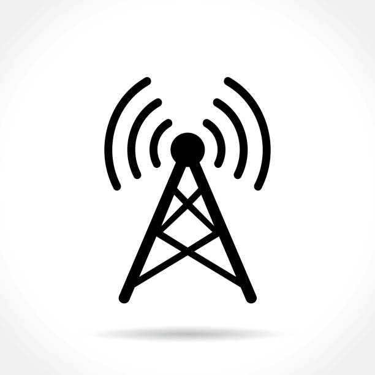
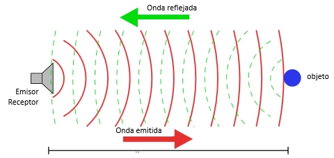
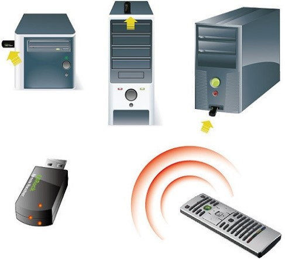
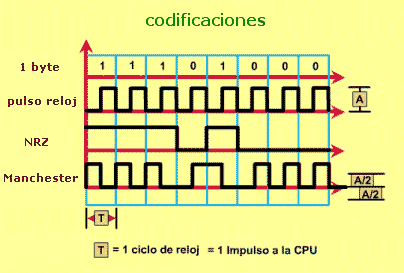
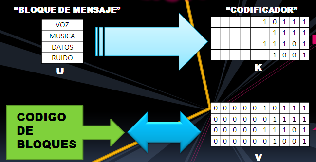

Medios de transmisión
Definición
Un medio de transmisión puede definirse en términos generales como cualquier cosa que pueda llevar información desde una fuente a un destino. El medio de transmisión suele ser el espacio libre, un cable metálico o un cable de fibra óptica.
La información suele ser una señal que es el resultado de la conversión de datos de otro formato.
Categorías
En telecomunicaciones, los medios de transmisión se pueden dividir en dos grandes categorías guiados y no guiados. A continuación se explicará más acerca de cada categoría
Guiados
Los medios guiados, que son aquellos que proporcionan un conducto de un dispositivo a otro.
Una señal puede viajar a través de estos medios siendo limitado por los limites físicos de los cables. Par trenzado, Cable Coaxial y Fibra óptica
•Par trenzado: Un par trenzado consta de dos conductores (normalmente de cobre), cada uno con su propio aislamiento plástico, trenzados entre sí. Uno de los cables se utiliza para llevar señales al receptor y el otro se utiliza solo como referencia de tierra.
Además de la señal enviada por el transmisor en uno de los cables, la interferencia y la diafonía pueden afectar a ambos cables y crear señales no deseadas.
•Cable coaxial:El cable coaxial transporta señales de rangos de frecuencia más altos que los del cable de par trenzado. El cable coaxial tiene un conductor central de cable sólido o trenzado encerrado en una funda aislante, que, a su vez, está revestida de un conductor exterior de lámina metálica, trenza o una combinación de las dos.
La envoltura metálica exterior sirve tanto como escudo contra el ruido como como segundo conductor. Este conductor exterior también está encerrado en una funda aislante y todo el cable está protegido por una cubierta de plástico.
•Fibra óptica: Un cable de fibra óptica está hecho de vidrio o plástico y transmite señales en forma de luz. Las fibras ópticas utilizan la reflexión para guiar la luz a través de un canal.
Un núcleo de vidrio o plástico está rodeado por un revestimiento de vidrio o plástico menos denso.

No guiados
Los medios no guiados transportan ondas electromagnéticas sin utilizar un conductor físico. Este tipo de comunicación suele denominarse comunicación inalámbrica.
Las señales se transmiten normalmente a través del espacio libre y, por lo tanto, están disponibles para cualquier persona que tenga un dispositivo capaz de recibirlas.
•Ondas de radio: Las ondas de radio son en su mayoría omnidireccionales, esto hace que las antenas de transmisión y recepción no necesiten estar alineadas, pero puede provocar interferencias si otra antena sintoniza la misma frecuencia o banda.
•Microondas: Las microondas son unidireccionales. Cuando una antena transmite ondas de microondas, estas pueden estar enfocadas de forma muy precisa. Esto significa que las antenas emisoras y receptoras deben estar alineadas.
•Infrarrojo: Las ondas infrarrojas se pueden utilizar para comunicaciones de corto alcance. Las ondas infrarrojas, al tener frecuencias altas, no pueden atravesar paredes. Esta característica ventajosa evita las interferencias entre un sistema y otro; un sistema de comunicación de corto alcance en una habitación no puede verse afectado por otro sistema en la habitación contigua
Medios de propagación
•Por tierra: Las señales de radio viajan a través de una posición más baja y cercana a la tierra
•Por aire: Las señales son de una frecuencia más alta y estas viajan por la ionosfera y recorren más distancia sin requerir tanta potencia de salida.
•Línea de mira: Son señales de alta frecuencia que se transmiten de antena a antena.
Corrección de errores
Los datos pueden corromperse durante la transmisión. Algunas aplicaciones requieren que se detecten y corrijan los errores.
Tipos de errores
■Error de un solo bit: Significa que sol,o 1 bit de una unidad de datos determinada, cambia de 1 a 0 o de 0 a 1.
■Error de ráfaga: Sucede cuando 2 o más bits en la unidad de datos han cambiado de valor (de 1 a 0 o de 0 a 1
Redundancia
El concepto central para detectar o corregir errores es la redundancia. Para poder detectar o corregir errores, necesitamos enviar algunos bits extra con nuestros datos.
Estos bits redundantes los agrega el remitente y el receptor los elimina. Su presencia permite al receptor detectar o corregir bits corruptos.
Detección vs Corrección
La corrección de errores es más difícil que la detección. En la detección de errores, solo buscamos si se ha producido algún error. La respuesta es un simple sí o no.
En la corrección de errores, necesitamos saber la cantidad exacta de bits que están dañados y su ubicación en el mensaje. El número de errores y el tamaño del mensaje son factores importantes.
Corrección de errores vs Retransmisión
La corrección de errores hacia adelante es el proceso en el que el receptor intenta adivinar el mensaje utilizando bits redundantes. La corrección por retransmisión es una técnica en la que el receptor detecta un error y solicita al remitente que reenvíe el mensaje.
Codificación
La redundancia se logra mediante varios esquemas de codificación. El remitente agrega bits redundantes mediante un proceso que crea una relación entre los bits redundantes y los bits de datos reales. El receptor comprueba estas relaciones para detectar o corregir errores.
Codificación de bloques
En la codificación de bloques, dividimos nuestro mensaje en bloques de k bits, llamados palabras de datos. Agregamos r bits redundantes para que la longitud total sea n = k + r. Estos bloques resultantes se denominan palabras de código. El proceso de codificación es uno a uno; la misma palabra de datos es siempre codificada de la misma manera.
Distancia de Hamming
La distancia de Hamming entre dos palabras (del mismo tamaño) es el número de diferencias entre los bits correspondientes. Se puede hallar aplicando la operación XOR a las dos palabras y contando los '1's en el resultado. La distancia de Hamming es siempre mayor que cero.
Códigos de bloques lineales
Los códigos de bloques lineales son códigos en los que el XOR de dos palabras de código válidas crea otra palabra de código válida. Para definirlos formalmente se requiere álgebra abstracta.
Códigos cíclicos
Los códigos cíclicos son códigos de bloques lineales con una propiedad adicional. En un código cíclico, si una palabra de código se desplaza cíclicamente, el resultado es otra palabra de código válida.
Suma de verificación
La suma de comprobación se utiliza en Internet mediante varios protocolos, aunque no en la capa de enlace de datos. Se basa en el concepto de redundancia.